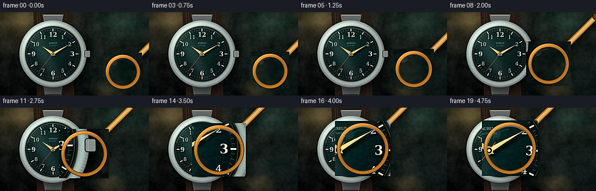
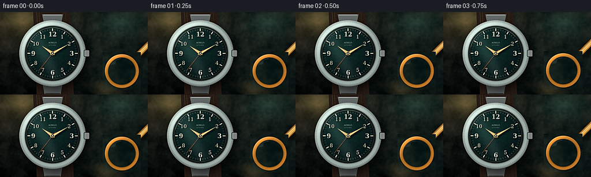
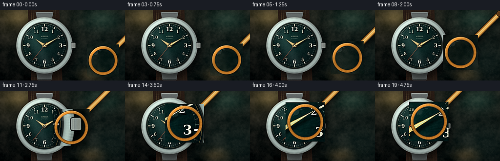
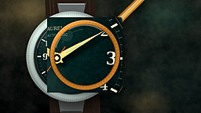
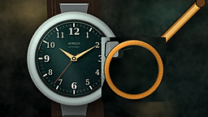
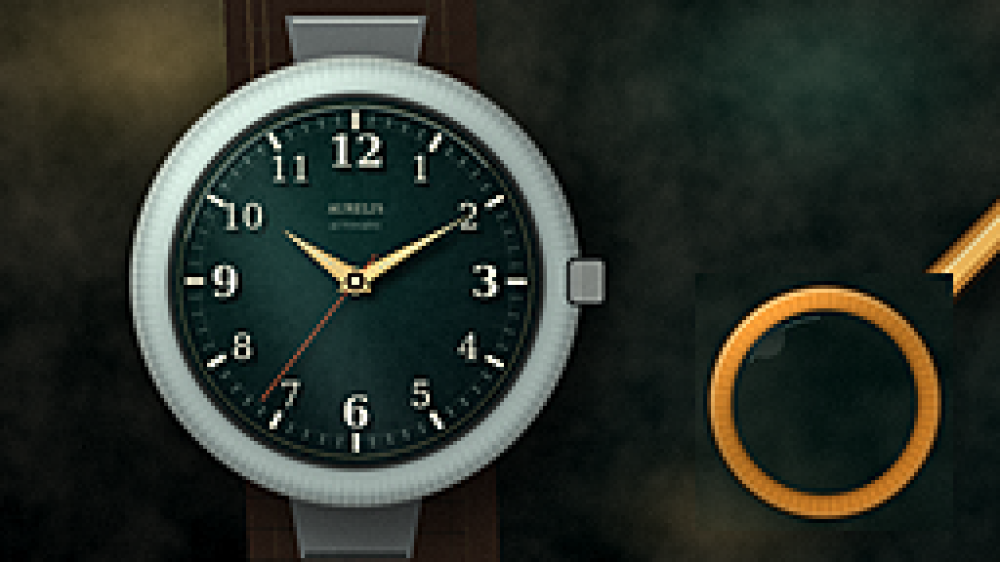
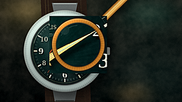
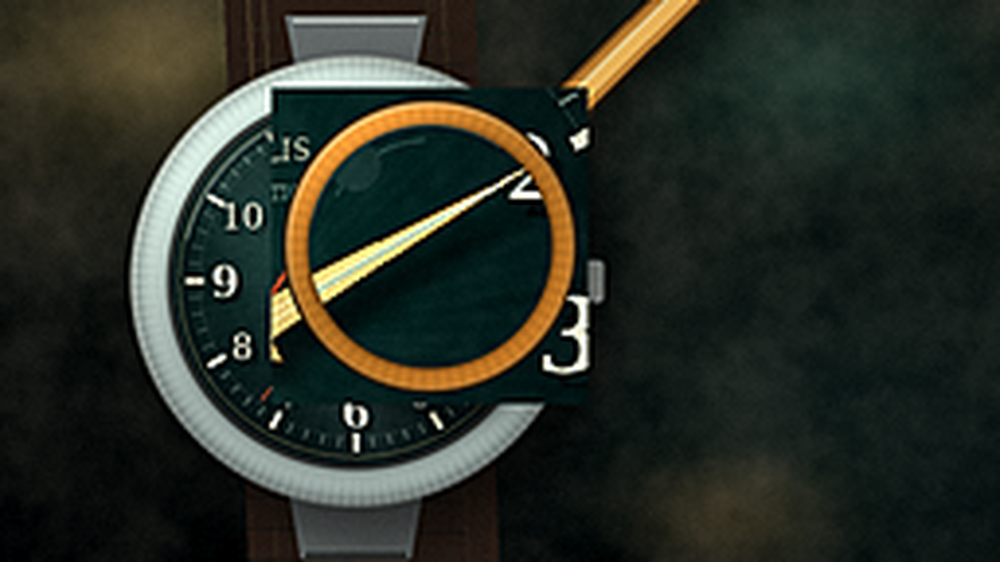
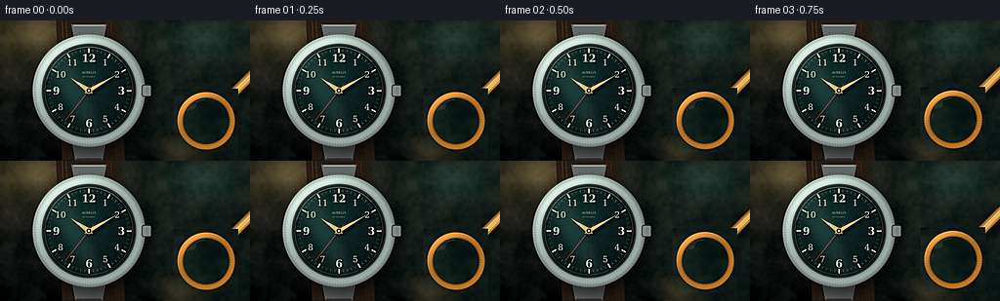

CODING AGENTS AS PIXEL WORLD MODELS
traex/DeepSeek-V4.1-Flash · phygen_067
点击播放 · 原生 RGB 像素
逐轮保存的候选
回放视频、检查图与代码变化。
每份候选均可单独播放。实际图片检查记录在下方工具轨迹中。
候选 01播放与检查图
点击播放 · 原生 RGB 像素


展开代码变化
--- 上一保存版本
+++ 本次保存版本
@@ -0,0 +1,601 @@
+from pathlib import Path
+import math
+
+import cv2
+import numpy as np
+from PIL import Image, ImageDraw, ImageFilter, ImageFont
+from scipy.ndimage import gaussian_filter
+
+import artifact_io
+
+
+W, H = 256, 144
+SS = 4
+WW, HH = W * SS, H * SS
+FPS = 4
+NFRAMES = 20
+
+WATCH_CX, WATCH_CY = 91.0, 72.0
+DIAL_R = 47.0
+CASE_R = 57.0
+
+SERIF = "/usr/share/fonts/truetype/dejavu/DejaVuSerif.ttf"
+SERIF_BOLD = "/usr/share/fonts/truetype/dejavu/DejaVuSerif-Bold.ttf"
+
+
+def sstep(x):
+ x = np.clip(x, 0.0, 1.0)
+ return x * x * x * (x * (x * 6.0 - 15.0) + 10.0)
+
+
+def smoothstep(edge0, edge1, x):
+ t = np.clip((x - edge0) / (edge1 - edge0), 0.0, 1.0)
+ return t * t * (3.0 - 2.0 * t)
+
+
+def blend(base, overlay, alpha):
+ alpha = np.asarray(alpha, dtype=np.float32)
+ if alpha.ndim == 2:
+ alpha = alpha[..., None]
+ return base * (1.0 - alpha) + overlay * alpha
+
+
+def pil_over(base, overlay):
+ return np.asarray(
+ Image.alpha_composite(
+ Image.fromarray(np.clip(base * 255.0, 0, 255).astype(np.uint8)).convert("RGBA"),
+ overlay,
+ ).convert("RGB"),
+ dtype=np.float32,
+ ) / 255.0
+
+
+def draw_centered_text(draw, xy, text, font, fill, shadow=True):
+ box = draw.textbbox((0, 0), text, font=font)
+ tw, th = box[2] - box[0], box[3] - box[1]
+ x = xy[0] - tw / 2.0 - box[0]
+ y = xy[1] - th / 2.0 - box[1]
+ if shadow:
+ draw.text((x + 1.6 * SS, y + 1.8 * SS), text, font=font, fill=(5, 8, 9, 175))
+ draw.text((x, y), text, font=font, fill=fill)
+
+
+def make_background(rng):
+ y, x = np.mgrid[0:HH, 0:WW].astype(np.float32)
+ u, v = x / WW, y / HH
+
+ top = np.array([0.105, 0.125, 0.105], dtype=np.float32)
+ bottom = np.array([0.035, 0.047, 0.043], dtype=np.float32)
+ col = top[None, None, :] * (1.0 - v[..., None]) + bottom[None, None, :] * v[..., None]
+
+ warm = np.exp(-((u - 0.07) ** 2 / 0.085 + (v - 0.03) ** 2 / 0.10))
+ col += warm[..., None] * np.array([0.16, 0.12, 0.065], dtype=np.float32)
+
+ side = np.exp(-((u - 0.93) ** 2 / 0.12 + (v - 0.82) ** 2 / 0.18))
+ col += side[..., None] * np.array([0.035, 0.075, 0.070], dtype=np.float32)
+
+ coarse = gaussian_filter(rng.normal(size=(HH, WW)).astype(np.float32), 7.0 * SS)
+ coarse /= max(float(np.std(coarse)), 1e-6)
+ fine = gaussian_filter(rng.normal(size=(HH, WW)).astype(np.float32), 0.7 * SS)
+ fine /= max(float(np.std(fine)), 1e-6)
+
+ grain = 0.024 * fine + 0.018 * coarse
+ leather = (
+ 0.010 * np.sin(x / (5.0 * SS) + 0.55 * np.sin(y / (14.0 * SS)))
+ + 0.007 * np.sin(y / (2.7 * SS) + x / (32.0 * SS))
+ )
+ col += (grain + leather)[..., None] * np.array([1.0, 0.83, 0.70], dtype=np.float32)
+
+ # A few subdued, out-of-focus highlights keep the surface from looking flat.
+ for hx, hy, radius, tint in [
+ (0.16, 0.10, 0.085, (0.20, 0.16, 0.08)),
+ (0.83, 0.12, 0.12, (0.055, 0.13, 0.11)),
+ (0.73, 0.92, 0.07, (0.18, 0.12, 0.055)),
+ ]:
+ glow = np.exp(-(((u - hx) ** 2 + (v - hy) ** 2) / (2.0 * radius**2)))
+ col += glow[..., None] * np.asarray(tint, dtype=np.float32)
+
+ dx, dy = (u - 0.47) * 1.08, (v - 0.50)
+ vignette = np.clip(1.0 - 0.62 * (dx * dx + dy * dy) ** 1.05, 0.42, 1.0)
+ col *= vignette[..., None]
+
+ # The tabletop is intentionally defocused behind the product.
+ col = gaussian_filter(col, (1.3 * SS, 1.3 * SS, 0))
+ return np.clip(col, 0.0, 1.0).astype(np.float32)
+
+
+def add_strap_and_lugs(base):
+ overlay = Image.new("RGBA", (WW, HH), (0, 0, 0, 0))
+ draw = ImageDraw.Draw(overlay)
+
+ # Softly angled leather strap peeks out above and below the case.
+ strap = [
+ (57 * SS, -8 * SS), (121 * SS, -8 * SS),
+ (128 * SS, 152 * SS), (64 * SS, 152 * SS),
+ ]
+ draw.polygon(strap, fill=(39, 27, 20, 255))
+ for offset, alpha in [(5, 90), (9, 55)]:
+ draw.line(
+ [(58 * SS + offset * SS, -7 * SS), (66 * SS + offset * SS, 151 * SS)],
+ fill=(127, 88, 54, alpha), width=int(0.65 * SS),
+ )
+ draw.line(
+ [(118 * SS - offset * SS, -7 * SS), (125 * SS - offset * SS, 151 * SS)],
+ fill=(127, 88, 54, alpha), width=int(0.65 * SS),
+ )
+ for sy in range(7, 150, 8):
+ draw.line(
+ [(63 * SS, sy * SS), (119 * SS, (sy + 1.5) * SS)],
+ fill=(13, 10, 8, 55), width=int(0.5 * SS),
+ )
+
+ # Steel lugs make the watch read as a wristwatch rather than a loose dial.
+ for y0, y1 in [(4, 24), (121, 143)]:
+ lug = [(73 * SS, y0 * SS), (109 * SS, y0 * SS),
+ (105 * SS, y1 * SS), (77 * SS, y1 * SS)]
+ draw.polygon(lug, fill=(100, 106, 105, 255))
+ draw.line([(75 * SS, (y0 + 1) * SS), (107 * SS, (y0 + 1) * SS)],
+ fill=(206, 214, 207, 210), width=int(1.0 * SS))
+ draw.line([(78 * SS, (y1 - 1) * SS), (104 * SS, (y1 - 1) * SS)],
+ fill=(31, 35, 34, 210), width=int(1.1 * SS))
+ return pil_over(base, overlay)
+
+
+def add_watch_shadow(base):
+ mask = Image.new("L", (WW, HH), 0)
+ draw = ImageDraw.Draw(mask)
+ cx, cy = WATCH_CX * SS, WATCH_CY * SS
+ draw.ellipse(
+ [(cx - 60 * SS + 5 * SS), (cy - 60 * SS + 8 * SS),
+ (cx + 60 * SS + 5 * SS), (cy + 60 * SS + 8 * SS)],
+ fill=210,
+ )
+ mask = mask.filter(ImageFilter.GaussianBlur(6.0 * SS))
+ alpha = np.asarray(mask, dtype=np.float32) / 255.0
+ return base * (1.0 - 0.67 * alpha[..., None])
+
+
+def add_case(base):
+ y, x = np.mgrid[0:HH, 0:WW].astype(np.float32)
+ cx, cy = WATCH_CX * SS, WATCH_CY * SS
+ dx, dy = x - cx, y - cy
+ dist = np.sqrt(dx * dx + dy * dy)
+ theta = np.arctan2(dy, dx)
+
+ # Dark gasket and inner lip.
+ inner_dark = 1.0 - smoothstep((CASE_R - 1.3) * SS, (CASE_R + 0.2) * SS, dist)
+ base = blend(base, np.full_like(base, [0.020, 0.023, 0.023]), inner_dark * 0.9)
+
+ # Brushed steel outer bezel, with a fine coin-edge and asymmetric highlights.
+ outer = 1.0 - smoothstep((CASE_R + 0.4) * SS, (CASE_R + 1.0) * SS, dist)
+ inner = smoothstep((DIAL_R - 1.2) * SS, (DIAL_R + 0.7) * SS, dist)
+ ring_a = outer * inner
+ q = np.clip((dist - DIAL_R * SS) / ((CASE_R - DIAL_R) * SS), 0.0, 1.0)
+ bevel = np.clip(np.sin(np.pi * q), 0.0, 1.0) ** 0.55
+ nx, ny = dx / np.maximum(dist, 1e-3), dy / np.maximum(dist, 1e-3)
+ spec = np.clip((-0.58 * nx - 0.81 * ny) * 0.9 + 0.18, 0.0, 1.0)
+ ridges = 0.035 * np.cos(132.0 * theta + 0.7 * np.sin(9.0 * theta)) * q**2
+ steel = np.empty_like(base)
+ steel[..., 0] = 0.25 + 0.38 * bevel + 0.24 * spec**2 + ridges
+ steel[..., 1] = 0.28 + 0.41 * bevel + 0.26 * spec**2 + ridges
+ steel[..., 2] = 0.28 + 0.39 * bevel + 0.24 * spec**2 + ridges
+ base = blend(base, steel, ring_a * 0.98)
+
+ # Crisp polished edges catch the light.
+ edge_hi = np.exp(-((dist - CASE_R * SS) / (0.8 * SS)) ** 2)
+ edge_hi *= 0.45 + 0.55 * np.clip((-0.7 * nx - 0.7 * ny), 0, 1)
+ base = blend(base, np.full_like(base, [0.93, 0.96, 0.90]), edge_hi * 0.55)
+ inner_edge = np.exp(-((dist - (DIAL_R + 0.7) * SS) / (0.65 * SS)) ** 2)
+ base = blend(base, np.full_like(base, [0.055, 0.060, 0.052]), inner_edge * 0.82)
+
+ # Crown at three o'clock, with alternating polished and dark ridges.
+ overlay = Image.new("RGBA", (WW, HH), (0, 0, 0, 0))
+ draw = ImageDraw.Draw(overlay)
+ crown_x = int((WATCH_CX + CASE_R - 0.8) * SS)
+ crown_y = int(WATCH_CY * SS)
+ draw.rounded_rectangle(
+ [(crown_x - 2 * SS), crown_y - 6 * SS, crown_x + 8 * SS, crown_y + 6 * SS],
+ radius=2.2 * SS, fill=(126, 132, 129, 255), outline=(27, 31, 30, 255),
+ width=int(0.8 * SS),
+ )
+ for rx in range(crown_x + 1 * SS, crown_x + 8 * SS, int(1.2 * SS)):
+ draw.line([(rx, crown_y - 5 * SS), (rx, crown_y + 5 * SS)],
+ fill=(225, 226, 210, 135), width=int(0.35 * SS))
+ return pil_over(base, overlay)
+
+
+def add_dial(base, rng):
+ y, x = np.mgrid[0:HH, 0:WW].astype(np.float32)
+ cx, cy = WATCH_CX * SS, WATCH_CY * SS
+ dx, dy = x - cx, y - cy
+ dist = np.sqrt(dx * dx + dy * dy)
+ rn = dist / (DIAL_R * SS)
+ theta = np.arctan2(dy, dx)
+
+ dial_mask = 1.0 - smoothstep((DIAL_R - 0.6) * SS, (DIAL_R + 0.15) * SS, dist)
+ base_col = np.array([0.018, 0.079, 0.083], dtype=np.float32)
+ dial = np.empty_like(base)
+ dial[:] = base_col
+
+ center_glow = np.exp(-(((x - (cx - 16 * SS)) ** 2 + (y - (cy - 19 * SS)) ** 2) /
+ (2.0 * (31 * SS) ** 2)))
+ dial += center_glow[..., None] * np.array([0.025, 0.095, 0.075], dtype=np.float32)
+ dial += (0.012 * (0.5 + 0.5 * np.cos(78.0 * theta + 2.2 * rn)))[..., None]
+ dial += (0.008 * (0.5 + 0.5 * np.cos(22.0 * theta - 0.3)))[..., None]
+ dial *= (0.79 + 0.23 * np.clip(1.0 - rn**2.2, 0.0, 1.0))[..., None]
+
+ fine = gaussian_filter(rng.normal(size=(HH, WW)).astype(np.float32), 0.55 * SS)
+ dial += (0.0055 * fine / max(float(np.std(fine)), 1e-6))[..., None]
+ base = blend(base, dial, dial_mask)
+
+ overlay = Image.new("RGBA", (WW, HH), (0, 0, 0, 0))
+ draw = ImageDraw.Draw(overlay)
+
+ # Chapter rings and the thin gold inner track.
+ for r, col, width in [
+ (45.2, (183, 154, 94, 185), 0.42),
+ (43.6, (5, 16, 17, 210), 0.75),
+ (40.0, (130, 151, 135, 65), 0.34),
+ ]:
+ draw.ellipse(
+ [cx - r * SS, cy - r * SS, cx + r * SS, cy + r * SS],
+ outline=col, width=max(1, int(width * SS)),
+ )
+
+ # Sixty minute markers; the five-minute markers are brighter and thicker.
+ for minute in range(60):
+ a = math.radians(minute * 6.0)
+ major = minute % 5 == 0
+ r0 = (38.9 if major else 40.2) * SS
+ r1 = (43.5 if major else 42.5) * SS
+ p0 = (cx + math.sin(a) * r0, cy - math.cos(a) * r0)
+ p1 = (cx + math.sin(a) * r1, cy - math.cos(a) * r1)
+ col = (230, 224, 197, 235) if major else (139, 157, 145, 160)
+ draw.line([p0, p1], fill=col, width=max(1, int((1.65 if major else 0.72) * SS)))
+
+ # Applied Arabic numerals.
+ regular_font = ImageFont.truetype(SERIF, int(8.9 * SS))
+ cardinal_font = ImageFont.truetype(SERIF_BOLD, int(10.6 * SS))
+ for hour in range(1, 13):
+ a = math.radians(hour * 30.0)
+ radius = 33.4 * SS
+ tx = cx + math.sin(a) * radius
+ ty = cy - math.cos(a) * radius
+ font = cardinal_font if hour in (12, 3, 6, 9) else regular_font
+ draw_centered_text(draw, (tx, ty), str(hour), font, (229, 224, 201, 246))
+
+ brand_font = ImageFont.truetype(SERIF, int(3.0 * SS))
+ auto_font = ImageFont.truetype(SERIF, int(2.15 * SS))
+ draw_centered_text(draw, (cx, cy - 18.5 * SS), "AURELIS", brand_font, (210, 205, 178, 210), shadow=False)
+ draw_centered_text(draw, (cx, cy - 14.3 * SS), "AUTOMATIC", auto_font, (150, 167, 154, 170), shadow=False)
+
+ base = pil_over(base, overlay)
+ return base
+
+
+def hand_polygon(cx, cy, angle_deg, length, base_half, tail):
+ a = math.radians(angle_deg)
+ ux, uy = math.sin(a), -math.cos(a)
+ px, py = math.cos(a), math.sin(a)
+ tip = (cx + ux * length, cy + uy * length)
+ back = (cx - ux * tail, cy - uy * tail)
+ left = (cx + px * base_half, cy + py * base_half)
+ right = (cx - px * base_half, cy - py * base_half)
+ return [back, left, tip, right]
+
+
+def add_hands(base):
+ overlay = Image.new("RGBA", (WW, HH), (0, 0, 0, 0))
+ shadow = Image.new("RGBA", (WW, HH), (0, 0, 0, 0))
+ draw = ImageDraw.Draw(overlay)
+ sd = ImageDraw.Draw(shadow)
+ cx, cy = WATCH_CX * SS, WATCH_CY * SS
+
+ hands = [
+ (305.0, 23.0, 2.8, 5.0, (218, 184, 111, 255), (255, 236, 172, 255)),
+ (60.0, 34.0, 2.2, 5.5, (226, 195, 121, 255), (255, 241, 183, 255)),
+ ]
+ for angle, length, half, tail, main_col, hi_col in hands:
+ poly = hand_polygon(cx, cy, angle, length * SS, half * SS, tail * SS)
+ sd.polygon([(px + 2.2 * SS, py + 2.6 * SS) for px, py in poly], fill=(0, 0, 0, 150))
+ draw.polygon(poly, fill=main_col, outline=(55, 40, 20, 230))
+
+ a = math.radians(angle)
+ ux, uy = math.sin(a), -math.cos(a)
+ px, py = math.cos(a), math.sin(a)
+ highlight = [
+ (cx + ux * 3.0 * SS + px * 0.55 * SS, cy + uy * 3.0 * SS + py * 0.55 * SS),
+ (cx + ux * (length - 1.2) * SS, cy + uy * (length - 1.2) * SS),
+ (cx + ux * 3.0 * SS - px * 0.45 * SS, cy + uy * 3.0 * SS - py * 0.45 * SS),
+ ]
+ draw.line(highlight, fill=hi_col, width=max(1, int(0.38 * SS)))
+
+ # A narrow luminous inlay gives the hands detail under the lens.
+ l0 = 7.0 * SS
+ l1 = (length - 4.0) * SS
+ draw.line(
+ [(cx + ux * l0, cy + uy * l0), (cx + ux * l1, cy + uy * l1)],
+ fill=(214, 224, 187, 205), width=max(1, int(0.68 * SS)),
+ )
+
+ # Slim seconds hand and counterweight.
+ sa = math.radians(218.0)
+ sx, sy = math.sin(sa), -math.cos(sa)
+ p0 = (cx - sx * 8.5 * SS, cy - sy * 8.5 * SS)
+ p1 = (cx + sx * 39.0 * SS, cy + sy * 39.0 * SS)
+ sd.line([(p0[0] + 1.7 * SS, p0[1] + 2.0 * SS), (p1[0] + 1.7 * SS, p1[1] + 2.0 * SS)],
+ fill=(0, 0, 0, 120), width=int(0.85 * SS))
+ draw.line([p0, p1], fill=(180, 78, 47, 245), width=max(1, int(0.55 * SS)))
+ draw.ellipse([cx - 3.2 * SS, cy - 3.2 * SS, cx + 3.2 * SS, cy + 3.2 * SS],
+ fill=(51, 39, 26, 255), outline=(236, 207, 139, 255), width=int(0.8 * SS))
+ draw.ellipse([cx - 1.2 * SS, cy - 1.2 * SS, cx + 1.2 * SS, cy + 1.2 * SS],
+ fill=(243, 224, 167, 255))
+
+ shadow = shadow.filter(ImageFilter.GaussianBlur(0.9 * SS))
+ base = pil_over(base, shadow)
+ return pil_over(base, overlay)
+
+
+def add_crystal_glare(base):
+ overlay = Image.new("RGBA", (WW, HH), (0, 0, 0, 0))
+ draw = ImageDraw.Draw(overlay)
+ cx, cy = WATCH_CX * SS, WATCH_CY * SS
+
+ # Broad soft diagonal reflection, clipped to the crystal.
+ glare = Image.new("RGBA", (WW, HH), (0, 0, 0, 0))
+ gd = ImageDraw.Draw(glare)
+ gd.polygon(
+ [
+ ((cx - 51 * SS), (cy - 33 * SS)),
+ ((cx - 26 * SS), (cy - 51 * SS)),
+ ((cx + 20 * SS), (cy + 43 * SS)),
+ ((cx - 2 * SS), (cy + 51 * SS)),
+ ],
+ fill=(212, 241, 235, 22),
+ )
+ glare = glare.filter(ImageFilter.GaussianBlur(5.5 * SS))
+
+ clip = Image.new("L", (WW, HH), 0)
+ cd = ImageDraw.Draw(clip)
+ cd.ellipse(
+ [cx - (DIAL_R - 0.8) * SS, cy - (DIAL_R - 0.8) * SS,
+ cx + (DIAL_R - 0.8) * SS, cy + (DIAL_R - 0.8) * SS],
+ fill=255,
+ )
+ glare.putalpha(Image.composite(glare.getchannel("A"), Image.new("L", (WW, HH), 0), clip))
+ base = pil_over(base, glare)
+
+ draw.arc(
+ [cx - 45 * SS, cy - 45 * SS, cx + 45 * SS, cy + 45 * SS],
+ start=194, end=319, fill=(226, 244, 234, 65), width=int(1.05 * SS),
+ )
+ draw.arc(
+ [cx - 42 * SS, cy - 42 * SS, cx + 42 * SS, cy + 42 * SS],
+ start=205, end=289, fill=(180, 226, 218, 38), width=int(0.65 * SS),
+ )
+ return pil_over(base, overlay)
+
+
+def render_watch(rng):
+ base = make_background(rng)
+ base = add_strap_and_lugs(base)
+ base = add_watch_shadow(base)
+ base = add_case(base)
+ base = add_dial(base, rng)
+ base = add_hands(base)
+ base = add_crystal_glare(base)
+ return np.clip(base, 0.0, 1.0)
+
+
+def lens_geometry(frame_index):
+ t = frame_index / (NFRAMES - 1)
+ s = float(sstep(t))
+ # A gentle arc reads as a hand-guided approach rather than a linear slide.
+ cx = 211.0 - 103.0 * s
+ cy = 103.0 - 33.0 * s - 2.5 * math.sin(math.pi * s)
+ radius = 30.0 + 15.0 * s
+ magnification = 1.75 + 0.40 * s
+ return cx, cy, radius, magnification
+
+
+def magnifier_mask(cx, cy, radius, handle=True):
+ mask = Image.new("L", (WW, HH), 0)
+ draw = ImageDraw.Draw(mask)
+ c = (cx * SS, cy * SS)
+ r = radius * SS
+ draw.ellipse([c[0] - r, c[1] - r, c[0] + r, c[1] + r], fill=255)
+ if handle:
+ a = math.radians(45.0)
+ ux, uy = math.sin(a), -math.cos(a)
+ p0 = (c[0] + ux * (r - 1.5 * SS), c[1] + uy * (r - 1.5 * SS))
+ p1 = (c[0] + ux * (r + 78 * SS), c[1] + uy * (r + 78 * SS))
+ draw.line([p0, p1], fill=255, width=int(12.5 * SS))
+ draw.ellipse([p1[0] - 6.2 * SS, p1[1] - 6.2 * SS,
+ p1[0] + 6.2 * SS, p1[1] + 6.2 * SS], fill=255)
+ return mask
+
+
+def draw_handle(frame, cx, cy, radius):
+ c = (cx * SS, cy * SS)
+ r = radius * SS
+ a = math.radians(45.0)
+ ux, uy = math.sin(a), -math.cos(a)
+ p0 = (c[0] + ux * (r - 0.8 * SS), c[1] + uy * (r - 0.8 * SS))
+ p1 = (c[0] + ux * (r + 80 * SS), c[1] + uy * (r + 80 * SS))
+
+ overlay = Image.new("RGBA", (WW, HH), (0, 0, 0, 0))
+ draw = ImageDraw.Draw(overlay)
+
+ # Dark outline and shaded cylinder.
+ draw.line([p0, p1], fill=(31, 20, 9, 255), width=int(12.2 * SS))
+ draw.line([p0, p1], fill=(118, 76, 30, 255), width=int(10.4 * SS))
+ draw.line([p0, p1], fill=(181, 124, 51, 255), width=int(7.8 * SS))
+ draw.line([p0, p1], fill=(231, 179, 91, 255), width=int(4.7 * SS))
+
+ # Offset highlight makes the handle read as polished brass.
+ ox, oy = -1.3 * SS, -1.1 * SS
+ draw.line([(p0[0] + ox, p0[1] + oy), (p1[0] + ox, p1[1] + oy)],
+ fill=(255, 226, 157, 220), width=int(1.15 * SS))
+ draw.line([(p0[0] + 3.6 * SS, p0[1] + 3.2 * SS), (p1[0] + 3.6 * SS, p1[1] + 3.2 * SS)],
+ fill=(67, 41, 16, 130), width=int(0.8 * SS))
+
+ # Collar where the handle meets the ring.
+ collar = (c[0] + ux * (r + 3.0 * SS), c[1] + uy * (r + 3.0 * SS))
+ draw.ellipse(
+ [collar[0] - 7.2 * SS, collar[1] - 7.2 * SS,
+ collar[0] + 7.2 * SS, collar[1] + 7.2 * SS],
+ fill=(153, 99, 38, 255), outline=(50, 30, 11, 255), width=int(1.1 * SS),
+ )
+ draw.ellipse(
+ [collar[0] - 4.6 * SS, collar[1] - 4.6 * SS,
+ collar[0] + 4.6 * SS, collar[1] + 4.6 * SS],
+ fill=(210, 153, 68, 255), outline=(255, 215, 130, 150), width=int(0.65 * SS),
+ )
+
+ # Rounded end cap, mostly outside the frame at the start.
+ draw.ellipse([p1[0] - 6.2 * SS, p1[1] - 6.2 * SS,
+ p1[0] + 6.2 * SS, p1[1] + 6.2 * SS],
+ fill=(94, 58, 24, 255), outline=(25, 16, 7, 255), width=int(1.0 * SS))
+ return pil_over(frame, overlay)
+
+
+def apply_lens(frame, source, cx, cy, radius, magnification):
+ cxp, cyp, rp = cx * SS, cy * SS, radius * SS
+ x0, x1 = max(0, int(cxp - rp - 3 * SS)), min(WW, int(cxp + rp + 3 * SS))
+ y0, y1 = max(0, int(cyp - rp - 3 * SS)), min(HH, int(cyp + rp + 3 * SS))
+ yy, xx = np.mgrid[y0:y1, x0:x1].astype(np.float32)
+ dx, dy = xx - cxp, yy - cyp
+ rr = np.sqrt(dx * dx + dy * dy)
+ rn = rr / rp
+
+ # Mild barrel distortion, strongest near the rim.
+ warp = (1.0 / magnification) * (1.0 + 0.045 * rn**2)
+ map_x = cxp + dx * warp
+ map_y = cyp + dy * warp
+ lens = cv2.remap(source, map_x, map_y, cv2.INTER_CUBIC, borderMode=cv2.BORDER_REFLECT)
+
+ # Optical grade: slightly brighter, cleaner, and gently cool in the glass.
+ lens = (lens - 0.5) * 1.07 + 0.5
+ lens *= np.array([1.035, 1.055, 1.045], dtype=np.float32)
+ lens = lens * 1.035 + 0.007
+ gray = lens.mean(axis=2, keepdims=True)
+ lens = gray + (lens - gray) * 1.055
+ edge_vignette = 1.0 - 0.10 * smoothstep(0.74, 1.0, rn)
+ lens *= edge_vignette[..., None]
+ lens += (0.018 * smoothstep(0.58, 1.0, rn) * (0.5 + 0.5 * np.cos(10.0 * np.arctan2(dy, dx))))[..., None]
+
+ alpha = 1.0 - smoothstep((radius - 0.45) * SS, (radius + 0.25) * SS, rr / SS)
+ region = frame[y0:y1, x0:x1]
+ frame[y0:y1, x0:x1] = region * (1.0 - alpha[..., None]) + np.clip(lens, 0, 1) * alpha[..., None]
+ return frame
+
+
+def draw_ring(frame, cx, cy, radius):
+ y, x = np.mgrid[0:HH, 0:WW].astype(np.float32)
+ cxp, cyp = cx * SS, cy * SS
+ dx, dy = x - cxp, y - cyp
+ dist = np.sqrt(dx * dx + dy * dy)
+ theta = np.arctan2(dy, dx)
+ rp = radius * SS
+ width = 6.3 * SS
+ r_inner = rp - width
+ q = np.clip((dist - r_inner) / width, 0.0, 1.0)
+ ring_mask = smoothstep(r_inner - 0.55 * SS, r_inner + 0.3 * SS, dist)
+ ring_mask *= 1.0 - smoothstep(rp - 0.15 * SS, rp + 0.55 * SS, dist)
+
+ nx, ny = dx / np.maximum(dist, 1e-3), dy / np.maximum(dist, 1e-3)
+ bevel = np.clip(np.sin(np.pi * q), 0.0, 1.0) ** 0.5
+ spec = np.clip((-0.55 * nx - 0.84 * ny), 0.0, 1.0)
+ lower = np.clip((0.55 * nx + 0.84 * ny), 0.0, 1.0)
+ grooves = 0.026 * np.cos(64.0 * theta) * (0.35 + 0.65 * np.sin(np.pi * q))
+
+ ring = np.empty_like(frame)
+ ring[..., 0] = 0.24 + 0.46 * bevel + 0.28 * spec**2 + 0.07 * lower + grooves
+ ring[..., 1] = 0.15 + 0.29 * bevel + 0.19 * spec**2 + 0.035 * lower + grooves * 0.7
+ ring[..., 2] = 0.045 + 0.095 * bevel + 0.09 * spec**2 + 0.01 * lower + grooves * 0.35
+
+ # Dark outer rim and a bright reflected crescent.
+ outer_dark = np.exp(-((dist - rp) / (0.65 * SS)) ** 2)
+ ring = blend(ring, np.full_like(ring, [0.055, 0.032, 0.012]), outer_dark * 0.65)
+ crescent = np.exp(-((dist - (rp - 1.25 * SS)) / (0.55 * SS)) ** 2)
+ crescent *= np.clip(0.25 + 0.75 * spec**1.4, 0, 1)
+ ring = blend(ring, np.full_like(ring, [1.0, 0.91, 0.67]), crescent * 0.62)
+ return blend(frame, np.clip(ring, 0, 1), ring_mask)
+
+
+def add_glass_highlights(frame, cx, cy, radius):
+ overlay = Image.new("RGBA", (WW, HH), (0, 0, 0, 0))
+ draw = ImageDraw.Draw(overlay)
+ c = (cx * SS, cy * SS)
+ r = radius * SS
+
+ # Two soft internal reflections, kept inside the lens.
+ draw.arc(
+ [c[0] - r * 0.86, c[1] - r * 0.86, c[0] + r * 0.86, c[1] + r * 0.86],
+ start=194, end=305, fill=(238, 253, 245, 100), width=int(1.5 * SS),
+ )
+ draw.arc(
+ [c[0] - r * 0.73, c[1] - r * 0.73, c[0] + r * 0.73, c[1] + r * 0.73],
+ start=208, end=267, fill=(192, 233, 222, 48), width=int(0.85 * SS),
+ )
+ draw.ellipse(
+ [c[0] - r * 0.68, c[1] - r * 0.72, c[0] - r * 0.34, c[1] - r * 0.38],
+ fill=(255, 255, 246, 20),
+ )
+
+ # Mask any antialiased spill to the circular lens.
+ clip = Image.new("L", (WW, HH), 0)
+ cd = ImageDraw.Draw(clip)
+ cd.ellipse([c[0] - (r - 6.5 * SS), c[1] - (r - 6.5 * SS),
+ c[0] + (r - 6.5 * SS), c[1] + (r - 6.5 * SS)], fill=255)
+ overlay.putalpha(Image.composite(overlay.getchannel("A"), Image.new("L", (WW, HH), 0), clip))
+ return pil_over(frame, overlay)
+
+
+def add_magnifier(frame, source, cx, cy, radius, magnification):
+ # Cast a soft, directional shadow on the tabletop and watch.
+ shadow_mask = magnifier_mask(cx, cy, radius, handle=True)
+ shadow_mask = Image.fromarray(np.asarray(shadow_mask))
+ shifted = Image.new("L", (WW, HH), 0)
+ shifted.paste(shadow_mask, (int(4.2 * SS), int(5.7 * SS)))
+ shifted = shifted.filter(ImageFilter.GaussianBlur(4.6 * SS))
+ shadow_alpha = np.asarray(shifted, dtype=np.float32) / 255.0
+ frame *= (1.0 - 0.48 * shadow_alpha[..., None])
+
+ frame = draw_handle(frame, cx, cy, radius)
+ frame = apply_lens(frame, source, cx, cy, radius, magnification)
+ frame = draw_ring(frame, cx, cy, radius)
+ frame = add_glass_highlights(frame, cx, cy, radius)
+ return np.clip(frame, 0.0, 1.0)
+
+
+def finish_frame(frame):
+ image = Image.fromarray(np.clip(frame * 255.0 + 0.5, 0, 255).astype(np.uint8))
+ image = image.resize((W, H), Image.Resampling.LANCZOS)
+ image = image.filter(ImageFilter.UnsharpMask(radius=1.05, percent=72, threshold=2))
+ arr = np.asarray(image, dtype=np.float32) / 255.0
+
+ # Subtle output-scale grain, fixed in screen space so it does not crawl.
+ rng = np.random.default_rng(6701)
+ grain = rng.normal(size=(H, W, 1)).astype(np.float32)
+ arr += 0.006 * grain
+ arr = np.clip(arr, 0.0, 1.0)
+ return (arr * 255.0 + 0.5).astype(np.uint8)
+
+
+def main():
+ rng = np.random.default_rng(672026)
+ source = render_watch(rng)
+ frames = []
+ for i in range(NFRAMES):
+ cx, cy, radius, magnification = lens_geometry(i)
+ frame = add_magnifier(source.copy(), source, cx, cy, radius, magnification)
+ frames.append(finish_frame(frame))
+ print(f"rendered {i + 1:02d}/{NFRAMES}: lens=({cx:.1f},{cy:.1f}) r={radius:.1f} mag={magnification:.2f}")
+
+ frames = np.stack(frames, axis=0)
+ artifact_io.save(frames, Path(__file__).resolve().parent)
+
+
+if __name__ == "__main__":
+ main()
候选 02播放与检查图
点击播放 · 原生 RGB 像素

展开代码变化
--- 上一保存版本
+++ 本次保存版本
@@ -391,10 +391,10 @@
t = frame_index / (NFRAMES - 1)
s = float(sstep(t))
# A gentle arc reads as a hand-guided approach rather than a linear slide.
- cx = 211.0 - 103.0 * s
- cy = 103.0 - 33.0 * s - 2.5 * math.sin(math.pi * s)
- radius = 30.0 + 15.0 * s
- magnification = 1.75 + 0.40 * s
+ cx = 211.0 - 101.0 * s
+ cy = 103.0 - 40.0 * s - 2.5 * math.sin(math.pi * s)
+ radius = 30.0 + 7.5 * s
+ magnification = 1.75 + 0.95 * s
return cx, cy, radius, magnification
可观测工具轨迹
实际执行的命令与返回图片。
命令 1exit 0
/bin/bash -lc "pwd && rg --files -g 'prompt.txt' -g 'GENERATION_RULES.md' -g 'task_spec.json' -g '"'!*.mp4'"' -g '"'!*.mov'"'"
命令 2exit 0
/bin/bash -lc 'ls -la'
命令 3exit 0
/bin/bash -lc 'cat prompt.txt'
命令 4exit 0
/bin/bash -lc 'cat GENERATION_RULES.md'
命令 5exit 0
/bin/bash -lc 'cat task_spec.json'
命令 6exit 0
/bin/bash -lc 'cat artifact_io.py'
命令 7exit 0
/bin/bash -lc 'fc-list | head -40'
命令 8exit 0
/bin/bash -lc "python - <<'PY'
import importlib.util
for m in ['cv2','scipy','numpy','PIL']:
print(m, bool(importlib.util.find_spec(m)))
PY"命令 9exit 1
/bin/bash -lc 'python generate.py'
命令 10exit 0
/bin/bash -lc 'python generate.py'
命令 11exit 0
/bin/bash -lc "python - <<'PY'
from PIL import Image
import numpy as np
for i in [0,5,10,15,19]:
a=np.asarray(Image.open(f'frames/{i:02d}.png')).astype(float)
print(i, 'mean',a.mean().round(1), 'std',a.std().round(1), 'min',a.min(), 'max',a.max())
PY"命令 12exit 0
/bin/bash -lc "python - <<'PY'
from PIL import Image
for i in [0,19]:
im=Image.open(f'frames/{i:02d}.png').resize((1024,576), Image.Resampling.NEAREST)
im.save(f'.tmp/zoom_{i:02d}.png')
PY"命令 13exit 0
/bin/bash -lc 'python generate.py'
命令 14exit 0
/bin/bash -lc "python - <<'PY'
from PIL import Image
im=Image.open('frames/19.png').resize((1024,576), Image.Resampling.LANCZOS)
im.save('.tmp/final_zoom.png')
PY"命令 15exit 0
/bin/bash -lc 'ls -lh frames pixels.npz index.html inspection.png transition_check.png generate.py'
命令 16exit 0
/bin/bash -lc "python -m py_compile generate.py && echo 'generate.py compiles'"
命令 17exit 0
/bin/bash -lc "python - <<'PY'
import numpy as np
from PIL import Image
p=np.load('pixels.npz')['pixels']
print('npz shape',p.shape,'dtype',p.dtype)
ims=[np.asarray(Image.open(f'frames/{i:02d}.png')) for i in range(20)]
print('frame shapes',sorted(set(x.shape for x in ims)))
d=[np.abs(ims[i].astype(np.int16)-ims[i-1].astype(np.int16)).mean() for i in range(1,20)]
print('adjacent mean abs diff min/max',round(min(d),3),round(max(d),3))
print('unique colors frame 0/19',len(np.unique(ims[0].reshape(-1,3),axis=0)),len(np.unique(ims[-1].reshape(-1,3),axis=0)))
PY"命令 18exit 0
/bin/bash -lc 'git status --short 2>/dev/null || true'
命令 19exit 0
/bin/bash -lc "python - <<'PY'
from pathlib import Path
import json,re
html=Path('index.html').read_text()
m=re.search(r'const data = (\\{.*?\\});', html, re.S)
print('player payload present', bool(m))
print('index title tokens', 'A magnifying glass' in html)
print('frames files', len(list(Path('frames').glob('*.png'))))
print('spec', json.loads(Path('task_spec.json').read_text()))
PY"命令 20exit 0
/bin/bash -lc "sed -n '1,220p' player_template.html"
命令 21exit 0
/bin/bash -lc "python - <<'PY'
from pathlib import Path
from PIL import Image
import hashlib
frames=[Image.open(f'frames/{i:02d}.png') for i in range(20)]
assert all(im.size==(256,144) and im.mode=='RGB' for im in frames)
assert len({hashlib.sha256(im.tobytes()).hexdigest() for im in frames})==20
assert Path('pixels.npz').is_file() and Path('index.html').is_file()
print('validated: 20 unique RGB frames, 256x144; npz/player present')
PY"命令 22exit 0
/bin/bash -lc "python - <<'PY'
from pathlib import Path
html=Path('index.html').read_text()
for token in ['__ID__','__DATA__','window.__pixelReady=true','A magnifying glass']:
print(token, html.count(token))
PY"视觉工具实际返回图片 1

视觉工具实际返回图片 2

视觉工具实际返回图片 3

视觉工具实际返回图片 4
视觉工具实际返回图片 5

视觉工具实际返回图片 6
视觉工具实际返回图片 7

视觉工具实际返回图片 8

视觉工具实际返回图片 9

视觉工具实际返回图片 10

保存候选 2 份；完成命令 22 次；可验证图片返回 10 张。原始 API 响应与完整日志保留在本地。